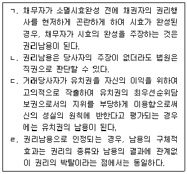
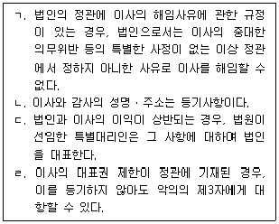
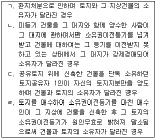
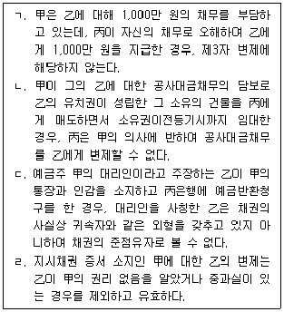
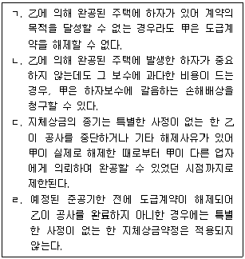

변리사-1차(2교시) (2021-02-27 기출문제)
1. 권리남용금지의 원칙에 관한 설명으로 옳은 것을 모두 고른 것은? (다툼이 있으면 판례에 따름)

- ㄱ, ㄴ
- ㄴ, ㄷ
- ㄷ, ㄹ
- ㄱ, ㄴ, ㄷ
- ㄴ, ㄷ, ㄹ
(정답률: 알수없음)

2. 법인의 기관에 관한 설명으로 옳은 것을 모두 고른 것은? (다툼이 있으면 판례에 따름)

- ㄱ, ㄷ
- ㄴ, ㄹ
- ㄱ, ㄴ, ㄹ
- ㄱ, ㄷ, ㄹ
- ㄴ, ㄷ, ㄹ
(정답률: 알수없음)
3. 비법인사단에 관한 설명으로 옳은 것은? (다툼이 있으면 판례에 따름)
- 비법인사단은 부동산소유권에 관하여 등기의무자가 될 수 없다.
- 비법인사단의 해산에 따른 청산절차에는 사단법인의 청산인에 관한 민법 규정을 유추 적용할 수 있다.
- 비법인사단의 대표자가 행한 타인에 대한 업무의 포괄적 위임과 그에 따른 포괄적 수임인의 대행행위는 비법인사단에 대하여 그 효력이 있다.
- 비법인사단의 채무는 구성원의 지분비율에 따라 귀속한다.
- 이사의 결원으로 인하여 손해가 생길 염려가 있더라도 이해관계인은 법원에 임시이사의 선임을 청구할 수 없다.
(정답률: 알수없음)
4. 법률행위의 부관에 관한 설명으로 옳지 않은 것은? (다툼이 있으면 판례에 따름)
- 상계에는 시기(始期)를 붙이지 못한다.
- 현상광고에 정한 행위의 완료에 조건이나 기한을 붙일 수 있다.
- 무상임치와 무이자 소비대차의 경우, 채무자만이 기한이익을 갖는다.
- 조건의 성취로 인하여 이익을 받을 당사자가 신의성실에 반하여 조건을 성취시킨 때에는 상대방은 그 조건이 성취하지 아니한 것으로 주장할 수 있다.
- 부관이 붙은 법률행위에 있어서 부관에 표시된 사실이 발생한 때뿐만 아니라 발생하지 않는 것으로 확정된 때에도 그 채무를 이행하여야 한다고 보는 것이 상당한 경우에는 표시된 사실의 발생 여부가 확정되는 것을 불확정기한으로 정한 것으로 본다.
(정답률: 알수없음)
5. 물건에 관한 설명으로 옳은 것은? (다툼이 있으면 판례에 따름)
- 부동산에 부속된 동산을 분리하면 그 동산의 경제적 가치가 없는 경우에는 타인이 권원에 의하여 동산을 부속시킨 경우라도 그 동산은 부동산소유자에게 귀속된다.
- 집합물에 대한 양도담보권자가 점유개정의 방법으로 양도담보권설정계약 당시 존재하는 집합물의 점유를 취득한 후 양도담보권설정자가 자기 소유의 집합물을 이루는 물건을 반입한 경우, 나중에 반입된 물건에는 양도담보권의 효력이 미치지 않는다.
- 적법한 경작권 없이 타인의 토지를 경작하였다면 그 경작한 입도(立稻)가 성숙한 경우에도 경작자는 그 입도의 소유권을 갖지 못한다.
- 종물은 주물의 처분에 따르므로, 당사자의 특약으로 종물만을 별도로 처분할 수 없다.
- 입목에 관한 법률에 의하여 소유권보존등기가 마쳐진 입목은 토지와 분리하여 양도될 수 있으나, 저당권의 객체는 될 수 없다.
(정답률: 알수없음)
6. 소멸시효에 관한 설명으로 옳지 않은 것은? (다툼이 있으면 판례에 따름)
- 소멸시효에 관한 규정은 강행규정이지만, 법률행위에 의하여 경감할 수 있다.
- 공유물분할청구권은 공유관계가 존속하는 한 별도로 소멸시효가 진행되지 않는다.
- 부당이득반환청구권의 소멸시효는 청구권이 성립한 때로부터 진행하고, 원칙적으로 권리의 존재나 발생을 알지 못하였다고 하더라도 소멸시효의 진행에 장애가 되지 않는다.
- 부동산매수인이 소유권이전등기 없이 부동산을 인도받아 사용ㆍ수익하다가 제3자에게 그 부동산을 처분하고 점유를 승계하여 준 경우, 소유권이전등기청구권의 소멸시효가 진행되지 않는다.
- 원인채권의 지급을 확보하기 위하여 어음이 수수된 당사자 사이에 채권자가 어음채권에 관한 집행권원에 기하여 한 배당요구는 그 원인채권의 소멸시효를 중단시키는 효력이 없다.
(정답률: 알수없음)
7. 불공정한 법률행위에 관한 설명으로 옳은 것은? (다툼이 있으면 판례에 따름)
- 불공정한 법률행위에도 무효행위 전환의 법리가 적용될 수 있다.
- 불공정한 법률행위로서 무효인 경우에도 추인하면 유효로 된다.
- 불공정한 법률행위에 관한 규정은 부담 없는 증여의 경우에도 적용된다.
- 경매에서 경매부동산의 매각대금이 시가에 비하여 현저히 저렴한 경우, 불공정한 법률행위에 해당하여 무효이다.
- 법률행위가 현저하게 공정을 잃은 경우, 특별한 사정이 없는 한 그 법률행위는 궁박ㆍ경솔ㆍ무경험으로 인해 이루어진 것으로 추정된다.
(정답률: 알수없음)
8. 착오로 인한 법률행위에 관한 설명으로 옳은 것은? (다툼이 있으면 판례에 따름)
- 법률에 관한 착오는 그것이 법률행위 내용의 중요부분에 관한 것이라 하더라도 착오를 이유로 취소할 수 없다.
- 착오로 인한 의사표시의 취소에 관한 민법 제109조 제1항은 당사자의 합의로 그 적용을 배제할 수 없다.
- 착오한 표의자의 중대한 과실 유무에 관한 증명책임은 의사표시의 효력을 부인하는 착오자에게 있다.
- 상대방이 표의자의 착오를 알고 이용한 경우, 그 착오가 표의자의 중대한 과실로 인한 것이라고 하더라도 표의자는 착오에 의한 의사표시를 취소할 수 있다.
- 표의자가 착오를 이유로 의사표시를 취소한 경우, 취소로 인하여 손해를 입은 상대방은 표의자에게 불법행위로 인한 손해배상을 청구할 수 있다.
(정답률: 알수없음)
9. 甲소유의 X토지를 매도하는 계약을 체결할 대리권을 甲으로부터 수여받은 乙은 甲의 대리인임을 현명하고 丙과 매매계약을 체결하였다. 이에 관한 설명으로 옳지 않은 것은? (다툼이 있으면 판례에 따름)
- 乙은 특별한 사정이 없는 한 매매계약을 해제할 권한이 없다.
- 乙이 미성년자인 경우, 甲은 乙의 제한능력을 이유로 X토지에 대한 매매계약을 취소할 수 없다.
- 丙과의 매매계약이 불공정한 법률행위에 해당하는지 여부가 문제된 경우, 매도인의 무경험은 甲을 기준으로 판단한다.
- 乙이 丙으로부터 매매대금을 수령한 경우, 甲에게 이를 아직 전달하지 않았더라도 특별한 사정이 없는 한 丙의 매매대금채무는 소멸한다.
- 甲이 乙에게 매매계약의 체결과 이행에 관한 포괄적 대리권을 수여한 경우, 특별한 사정이 없는 한 乙은 약정된 매매대금 지급기일을 연기하여 줄 권한을 가진다.
(정답률: 알수없음)
10. 법률행위의 취소에 관한 설명으로 옳지 않은 것은? (다툼이 있으면 판례에 따름)
- 제한능력자의 법률행위에 대한 법정대리인의 추인은 취소의 원인이 소멸된 후에 하여야 그 효력이 있다.
- 취소할 수 있는 법률행위로 취득한 권리를 취소권자의 상대방이 제3자에게 양도한 경우, 법정추인이 되지 않는다.
- 법률행위의 취소를 전제로 한 소송상의 이행청구나 이를 전제로 한 이행거절에는 취소의 의사표시가 포함되어 있다고 볼 수 있다.
- 취소할 수 있는 법률행위는 취소권자가 추인할 수 있는 후에 이의를 보류하지 않고 이행청구를 하면 추인한 것으로 본다.
- 취소권자가 취소할 수 있는 법률행위를 적법하게 추인한 경우, 그 법률행위를 다시 취소할 수 없다.
(정답률: 알수없음)
11. 甲은 토지거래허가구역 내에 있는 그 소유의 X토지에 대하여 토지거래허가를 받을 것을 전제로 乙과 매매계약을 체결하였다. 이에 관한 설명으로 옳지 않은 것은? (다툼이 있으면 판례에 따름)
- 甲이 허가신청절차에 협력하지 않으면 乙은 甲에 대하여 협력의무의 이행을 소구할 수 있다.
- 甲이 허가신청절차에 협력할 의무를 이행하지 않더라도 특별한 사정이 없는 한 乙은 이를 이유로 계약을 해제할 수 없다.
- 甲과 乙이 허가신청절차 협력의무의 이행거절의사를 명백히 표시한 경우, 매매계약은 확정적으로 무효가 된다.
- 매매계약이 乙의 사기에 의해 체결된 경우, 甲은 토지거래허가를 신청하기 전에 사기를 이유로 계약을 취소함으로써 허가신청절차의 협력의무를 면할 수 있다.
- X토지가 중간생략등기의 합의에 따라 乙로부터 丙에게 허가 없이 전매된 경우, 丙은 甲에 대하여 직접 허가신청절차의 협력의무 이행청구권을 가진다.
(정답률: 알수없음)
12. 甲은 그 소유의 X토지에 저당권을 설정하고 금전을 차용하는 계약을 체결할 대리권을 친구 乙에게 수여하였는데, 乙이 甲을 대리하여 X토지를 丙에게 매도하는 계약을 체결하였다. 이에 관한 설명으로 옳은 것은? (다툼이 있으면 판례에 따름)
- 丙이 乙의 대리행위가 유권대리라고 주장하는 경우, 그 주장 속에는 표현대리의 주장이 포함된 것으로 보아야 한다.
- 丙이 계약체결 당시에 乙에게 매매계약 체결의 대리권이 없음을 알았더라도 丙의 甲에 대한 최고권이 인정된다.
- 丙이 계약체결 당시에 乙에게 매매계약 체결의 대리권이 없음을 알았더라도 계약을 철회할 수 있다.
- 乙의 행위가 권한을 넘은 표현대리로 인정되는 경우, 丙에게 과실(過失)이 있다면 과실상계의 법리에 따라 甲의 책임이 경감될 수 있다.
- 丙이 乙의 대리행위가 권한을 넘은 표현대리라고 주장하는 경우, 乙에게 매매계약체결의 대리권이 있다고 丙이 믿을 만한 정당한 이유가 있었는지의 여부는 계약성립 이후의 모든 사정을 고려하여 판단해야 한다.
(정답률: 알수없음)
13. 선의취득에 관한 설명으로 옳지 않은 것은? (다툼이 있으면 판례에 따름)
- 대리인이 본인 소유가 아닌 물건을 처분하고 상대방이 본인 소유라고 오신한 경우에도 선의취득이 인정될 수 있다.
- 자동차관리법이 적용되는 자동차이더라도 행정상 특례조치에 의하지 아니하고는 적법하게 등록할 수 없어서 등록하지 아니한 상태에 있고 통상적인 용도가 도로 외의 장소에서만 사용하는 것이라는 등의 특별한 사정이 있다면, 민법 제249조의 선의취득규정이 적용될 수 있다.
- 채무자 이외의 사람에 속하는 동산을 경매절차에서 경락받은 경우에도 선의취득이 성립할 수 있다.
- 매수인이 점유개정으로 동산의 점유를 취득한 경우에는 선의취득이 인정되지 않는다.
- 점유보조자가 보관한 물건을 횡령하여 형사상 절도죄가 성립되는 경우, 그 물건은 민법 제250조(도품ㆍ유실물에 대한 특례)의 도품에 해당되므로, 피해자는 점유를 상실한 날로부터 2년 내에 그 물건의 반환을 청구할 수 있다.
(정답률: 알수없음)
14. 점유자와 회복자의 법률관계에 관한 설명으로 옳은 것은? (다툼이 있으면 판례에 따름)
- 악의의 점유자가 점유물의 사용에 따른 이익을 반환하여야 하는 경우, 자신의 노력으로 점유물을 활용하여 얻은 초과이익도 반환하여야 한다.
- 악의의 수익자는 받은 이익에 이자를 붙여 반환하여야 하며, 그 이자의 이행지체로 인한 지연손해금도 지급하여야 한다.
- 악의의 점유자가 과실(果實)을 수취하지 못한 경우, 이에 대한 과실(過失)이 없더라도 그 과실(果實)의 대가를 보상하여야 한다.
- 점유자가 점유물을 개량하기 위하여 유익비를 지출한 경우는 점유자가 점유물을 반환할 때에 그 상환을 청구할 수 있으나, 필요비를 지출한 경우에는 즉시 상환을 청구할 수 있다.
- 점유물이 점유자의 책임 있는 사유로 멸실된 때, 악의의 점유자라 하더라도 자주점유인 경우는 타주점유에 비하여 책임이 경감된다.
(정답률: 알수없음)
15. 등기에 관한 설명으로 옳은 것은? (다툼이 있으면 판례에 따름)
- 본등기에 의한 물권변동의 효력은 가등기를 한 때에 소급하여 발생한다.
- 등기가 원인 없이 말소된 경우, 그 회복등기가 마쳐지기 전이라도 말소된 등기의 등기명의인은 적법한 권리자로 추정된다.
- 합유자가 그 지분을 포기하면 지분권 이전등기를 하지 않더라도, 포기된 합유지분은 나머지 잔존 합유지분권자들에게 물권적으로 귀속하게 된다.
- 매매로 인한 소유권이전등기에서 등기명의자가 등기원인을 증여로 주장하였다면 등기의 추정력은 깨어진다.
- 사망자 명의로 신청하여 이루어진 이전등기도 특별한 사정이 없는 한 등기의 추정력이 인정되므로, 등기의 무효를 주장하는 자가 현재의 실체관계에 부합하지 않음을 증명하여야 한다.
(정답률: 알수없음)
16. 乙은 甲의 X토지를 임차하여 점유하고 있는데, 丙이 무단으로 X토지 위에 건축폐자재를 적치(積置)하여 乙의 토지사용을 방해하고 있다. 이에 관한 설명으로 옳지 않은 것은? (다툼이 있으면 판례에 따름)
- 甲은 丙에 대하여 소유권에 기한 방해배제청구권을 행사할 수 있다.
- 乙은 丙에 대하여 소유권에 기한 방해배제청구권을 행사할 수 없지만, 甲의 소유권에 기한 방해배제청구권을 대위 행사할 수 있다.
- 丙이 X토지를 자신의 것으로 오신하여 건축폐자재를 적치한 경우라 하더라도, 乙은 丙에 대하여 점유권에 기한 방해배제청구권을 행사할 수 있다.
- 甲은 丙에 대하여 점유권에 기한 방해배제청구권을 행사할 수 없지만, 乙의 점유권에 기한 방해배제청구권을 대위 행사할 수 있다.
- X토지에 대한 임대차 계약이 종료되면 甲은 乙에 대하여 임대차 계약상 반환청구권을 행사할 수 있는데, 이는 채권적 청구권으로 물권적 청구권과 별개로 행사할 수 있다.
(정답률: 알수없음)
17. 부동산 소유권의 점유취득시효에 관한 설명으로 옳지 않은 것은? (다툼이 있으면 판례에 따름)
- 시효완성자는 취득시효완성에 따른 등기를 하지 않더라도 시효완성 당시의 등기명의인에 대하여 취득시효를 주장할 수 있다.
- 취득시효가 완성되기 전에 등기명의인이 바뀐 경우에는 시효완성자는 취득시효완성 당시의 등기명의인에게 취득시효를 주장할 수 있다.
- 취득시효완성 후 등기명의인이 변경되면 설사 등기원인이 취득시효 완성 전에 존재하였더라도, 시효완성자는 변경된 등기명의인에게 취득시효를 주장할 수 없다.
- 취득시효기간이 진행하는 중에 등기명의인이 변동된 경우, 취득시효기간의 기산점을 임의로 선택하거나 소급하여 20년 이상 점유한 사실만을 내세워 시효완성을 주장할 수 없다.
- 취득시효완성 후 등기명의인이 바뀐 경우, 등기명의가 바뀐 시점으로부터 다시 취득시효기간이 경과하더라도 취득시효완성을 주장할 수 없다.
(정답률: 알수없음)
18. 2020. 10. 1. 甲소유의 X토지와 그 지상에 있는 Y건물에 설정된 저당권의 실행으로 X토지는 乙이 경락받았고, Y건물은 丙이 경락받았다. X토지 및 Y건물에는 매각에 따른 소유권이전등기만 되었으며, X토지에 대한 법정지상권 등기는 현재까지 경료되지 않았다. 2021. 1. 15. 乙은 X토지를 丁에게 양도하고 丁명의로 소유권이전등기를 하였고, 2021. 2. 10. 丙은 자신이 가진 X토지에 대한 권리와 Y건물에 대한 소유권을 戊에게 매도하는 계약을 체결하고 Y건물에 대한 소유권이전등기를 하였다. 이에 관한 설명으로 옳은 것은? (다툼이 있으면 판례에 따름)
- 2020. 10. 1. 당시 丙은 X토지에 대하여 법정지상권 등기를 하지 않았기 때문에, 丙은 X토지에 대한 법정지상권을 취득하지 못한다.
- 2020. 10. 1. 당시 丙이 법정지상권을 취득하였더라도 본인의 의사와 무관하게 취득한 것이므로, 지료를 지급할 필요가 없다.
- 2021. 1. 16. 丙은 X토지에 대한 법정지상권을 丁에게 주장할 수 있다.
- 2021. 2. 10. 戊는 법정지상권 등기 없이도, X토지에 대하여 법정지상권을 취득한다.
- 2021. 2. 27. 현재 丁은 戊에 대하여 Y건물의 철거를 청구할 수 있다.
(정답률: 알수없음)
19. 저당권에 관한 설명으로 옳지 않은 것은? (다툼이 있으면 판례에 따름)
- 구분건물의 전유부분에 설정된 저당권의 효력은 특별한 사정이 없는 한 그 전유부분의 소유자가 나중에 취득한 대지권에도 미친다.
- 저당목적물에 갈음하는 금전의 인도청구권에 대하여 저당권자가 압류하기 전에 그 금전이 물상보증인에게 지급되었더라도, 저당권자는 물상보증인에게 부당이득반환을 청구할 수 있다.
- 저당권부 채권을 양수한 채권자가 채권양도의 대항요건을 갖추지 않은 경우에는 그보다 후순위 저당권자에 대하여 채권양도로써 대항할 수 없다.
- 물상대위권을 행사하지 아니하여 우선변제권을 상실한 저당권자는 저당목적물에 갈음한 보상금으로 이득을 얻은 다른 채권자에 대하여 그 이익을 부당이득으로 반환청구할 수 없다.
- 저당부동산에 대하여 전세권을 취득한 제3자는 저당권자에게 그 부동산으로 담보된 채권을 변제하고 저당권의 소멸을 청구할 수 있다.
(정답률: 알수없음)
20. 전세권에 관한 설명으로 옳지 않은 것은? (다툼이 있으면 판례에 따름)
- 타인의 토지에 있는 건물의 소유자가 그 건물에 설정한 전세권의 효력은 그 건물의 소유를 목적으로 한 임차권에도 미친다.
- 대지와 건물이 동일한 소유자에게 속한 경우에 건물에 전세권을 설정한 때에는 그 대지소유권의 특별승계인은 전세권설정자에 대하여 지상권을 설정한 것으로 본다.
- 전세권이 법정갱신된 경우, 전세권자는 등기 없이도 그 목적물을 취득한 제3자에 대하여 갱신된 권리를 주장할 수 있다.
- 전세권에 저당권을 설정한 경우, 전세기간이 만료되더라도 전세권의 저당권자는 전세권 자체에 대하여 저당권을 실행하여 전세금을 배당받을 수 있다.
- 토지전세권의 존속기간을 15년으로 약정한 경우에 그 존속기간은 10년으로 단축되지만, 당사자는 존속기간 만료 시에 갱신한 날로부터 10년을 넘지 않는 기간으로 전세권을 갱신할 수 있다.
(정답률: 알수없음)
21. 민사유치권에 관한 설명으로 옳은 것은? (다툼이 있으면 판례에 따름)
- 유치권자는 유치물의 과실(果實)이 금전인 경우, 이를 수취하여 다른 채권보다 먼저 유치권으로 담보된 채권의 변제에 충당할 수 있다.
- 유치권자가 유치물의 보존에 필요한 사용을 한 경우에는 특별한 사정이 없는 한, 차임 상당의 이득을 소유자에게 반환할 의무가 없다.
- 건물공사대금의 채권자가 그 건물에 대하여 유치권을 행사하는 동안에는 그 공사대금채권의 소멸시효가 진행하지 않는다.
- 임대인과 임차인 사이에 임대차 종료에 따른 건물명도 시에 권리금을 반환하기로 약정한 경우, 임차인은 권리금반환청구권을 가지고 건물에 대한 유치권을 행사할 수 있다.
- 유치권자가 경매개시결정등기 전에 부동산에 관하여 유치권을 취득하였더라도 그 취득에 앞서 저당권설정등기가 먼저 되어 있었다면, 경매절차의 매수인에게 자기의 유치권으로 대항할 수 없다.
(정답률: 알수없음)
22. 양도담보에 관한 설명으로 옳지 않은 것은? (다툼이 있으면 판례에 따름)(문제 오류로 가답안 발표시 3번으로 발표되었지만 확정답안 발표시 1, 3번이 정답처리 되었습니다. 여기서는 가답안인 3번을 누르시면 정답 처리 됩니다.)
- 집합물 양도담보에서 양도담보의 목적인 집합물을 구성하는 개개의 물건이 변동되더라도 양도담보권의 효력은 항상 현재의 집합물에 미친다.
- 주택을 채권담보의 목적으로 양도한 경우, 양도담보권자가 그 주택을 사용ㆍ수익하기로 하는 약정이 없는 이상 주택에 대한 임대권한은 양도담보 설정자에게 있다.
- 채무자가 피담보채무의 이행지체에 빠진 경우, 양도담보권자는 채무자로부터 적법하게 목적 부동산의 점유를 이전받은 제3자에 대하여 직접 소유권에 기한 인도청구를 할 수 있다.
- 양도담보권의 목적인 주된 동산에 다른 동산이 부합되어 부합된 동산에 관한 권리를 상실하는 손해를 입은 사람은 양도담보권자를 상대로 그로 인한 보상을 청구할 수 없다.
- 채무자가 금전채무를 담보하기 위하여 그 소유의 동산을 채권자에게 양도하되 점유개정에 의하여 이를 계속 점유하기로 한 경우, 다시 다른 채권자와 양도담보 설정계약을 체결하고 점유개정의 방법으로 그 동산을 인도하더라도 뒤의 채권자는 양도담보권을 취득할 수 없다.
(정답률: 알수없음)
23. 채권질권에 관한 설명으로 옳지 않은 것은? (다툼이 있으면 판례에 따름)
- 피담보채권액이 입질채권액보다 적은 경우에도 질권의 효력은 입질채권 전부에 미친다.
- 주택임차인이 보증금반환채권을 담보로 질권을 설정한 경우, 질권자에게 임대차계약서를 교부하지 않았더라도 그 질권은 유효하다.
- 질권설정자가 제3채무자에게 질권설정 사실을 통지한 후 제3채무자가 질권자의 동의없이 질권설정자와 상계합의를 하여 질권의 목적인 채무를 소멸하게 한 경우, 질권자는 제3채무자에 대하여 직접 채무의 변제를 청구할 수 있다.
- 저당권부 채권에 질권을 설정한 경우에는 그 저당권등기에 질권의 부기등기를 하여야 질권의 효력이 저당권에 미친다.
- 저당권부 채권에 질권을 설정하면서 그 저당권의 피담보채권만을 질권의 목적으로 하고 저당권은 질권의 목적으로 하지 않는 것은 저당권의 부종성에 반하여 허용되지 않는다.
(정답률: 알수없음)
24. 관습법상 법정지상권이 성립되지 않는 경우를 모두 고른 것은? (다툼이 있으면 판례에 따름)

- ㄱ, ㄴ
- ㄴ, ㄹ
- ㄱ, ㄴ, ㄷ
- ㄴ, ㄷ, ㄹ
- ㄱ, ㄴ, ㄷ, ㄹ
(정답률: 알수없음)
25. 이행지체에 관한 설명으로 옳지 않은 것은? (다툼이 있으면 판례에 따름)
- 동산매매계약에서 매도인 甲이 매수인 乙에 대해 잔금 지급기일 도과를 이유로 지연손해금을 청구하려면 甲은 자기 채무의 이행제공을 계속하여야 한다.
- 신축 중인 상가를 乙에게 분양한 甲이 분양대금의 중도금지급기한을 1층 골조공사 완료시로 약정한 경우, 1층 골조공사 완료 후 乙이 그 사실을 안 날의 다음 날부터 중도금지급채무의 지체책임을 진다.
- 이행기의 정함이 없는 매매대금채권을 甲으로부터 양수한 丙이 채무자 乙을 상대로 그 이행을 구하는 소를 제기하고 소송 계속 중 甲이 乙에 대해 채권양도통지를 한 경우, 특별한 사정이 없는 한 乙은 채권양도통지가 도달된 날의 다음 날부터 이행지체의 책임을 진다.
- 매수인 乙이 매도인 甲의 영업소에서 쌀 10포대를 받아가기로 약정한 경우, 乙이 변제기 이후에 오지 않은 이상 甲은 지연에 따른 손해배상책임을 지지 않는다.
- 甲은 乙로부터 1억 원을 빌리면서 5회에 걸쳐 매회 2천만 원씩 분할상환하되, 분할변제기한을 1회라도 지체하였을 때는 기한의 이익을 잃는 것으로 특약한 경우, 특별한 사정이 없는 한 甲은 1회 변제기한이라도 지체하면 미상환금액 전부에 대하여 지체책임을 진다.
(정답률: 알수없음)
26. 채권의 목적에 관한 설명으로 옳지 않은 것은? (다툼이 있으면 판례에 따름)
- 수임인이 위임사무의 처리과정에서 받은 물건으로 위임인에게 인도할 목적물이 대체물이더라도 당사자 사이에는 특정된 물건과 같은 것으로 보아야 한다.
- 채권의 성질 또는 당사자의 의사표시로 달리 정한 바가 없는 이상, 특정물의 인도는 채권성립 당시의 그 물건의 소재지에서 한다.
- 제한종류채권에서 채무자가 지정권자인 경우, 채권의 기한이 도래한 후 채권자의 최고에도 불구하고 채무자가 이행할 물건을 지정하지 않으면 그 지정권은 채권자에게 이전한다.
- 채권액이 외국통화로 지정된 금액채권인 외화채권의 경우, 채권자는 대용급부권을 행사하여 우리나라 통화로 환산하여 청구할 수 없다.
- 이자제한법상 제한이자를 초과하는 이자채권을 자동채권으로 하여 상계의 의사표시를 하더라도 그 상계의 효력은 발생하지 않는다.
(정답률: 알수없음)
27. 이행불능에 관한 설명으로 옳지 않은 것은? (다툼이 있으면 판례에 따름)
- 토지거래허가구역 내의 토지에 관하여 허가를 조건으로 매매계약을 체결한 경우, 그 허가 전에는 거래계약상의 채무를 이행할 수 없게 되더라도 그에 따른 손해배상책임을 지지 않는다.
- 쌍무계약에서 당사자 일방이 부담하는 채무의 일부만이 채무자의 책임 있는 사유로 이행할 수 없게 된 경우, 이행가능한 나머지 부분만의 이행으로 계약목적을 달성할 수 없다면 채무의 이행은 전부가 불능이라고 보아야 한다.
- 민법상 임대차에서 목적물을 사용ㆍ수익하게 할 임대인의 의무는 임대인이 임대차목적물의 소유권을 상실한 것만으로 이행불능이 된다.
- 매매목적물에 관하여 매도인의 다른 채권자가 강제경매를 신청하여 그 절차가 진행 중에 있다는 사유만으로 매도인의 채무가 이행불능이 되는 것은 아니다.
- 쌍무계약에서 당사자 일방의 급부뿐만 아니라 상대방의 반대급부도 전부 이행불능이 된 경우, 특별한 사정이 없는 한 당사자 일방은 상대방에게 대상청구를 할 수 없다.
(정답률: 알수없음)
28. 채무인수에 관한 설명으로 옳은 것은? (다툼이 있으면 판례에 따름)
- 채무자와 채무인수인 사이의 면책적 채무인수에서 채권자가 승낙을 거절하였더라도 다시 승낙하면 채무인수의 효력이 생긴다.
- 채무자와 채무인수인 사이의 면책적 채무인수에서 채권자가 채무인수인에게 인수금의 지급을 청구하더라도 채무인수의 승낙으로 볼 수 없다.
- 채무자와 채무인수인 사이의 면책적 채무인수에서 채권자의 승낙이 없는 경우, 채무자와 인수인 사이에는 이행인수로서의 효력도 인정될 수 없다.
- 채권자와 채무인수인 사이의 중첩적 채무인수는 채무자의 의사에 반하여도 이루어질 수 있다.
- 면책적 채무인수의 경우, 채무인수인은 채무자에 대한 항변사유로 채권자에게 대항할 수 있다.
(정답률: 알수없음)
29. 다수당사자의 채권관계에 관한 설명으로 옳지 않은 것은? (다툼이 있으면 판례에 따름)
- 甲과 乙이 공유하는 부동산을 丙에게 공동으로 임대한 경우, 임대차 종료 시 甲과 乙은 지분비율에 따라 丙에게 임대차보증금을 반환할 채무를 부담한다.
- 丙에 대해 불가분채권을 가지고 있는 甲과 乙중 甲이 丙에게 이행을 청구하여 丙이 이행지체에 빠진 경우, 丙은 乙에게도 이행지체 책임을 진다.
- 甲과 乙이 공유하는 부동산을 丙이 무단으로 점유ㆍ사용하고 있는 경우, 특별한 사정이 없는 한 甲과 乙은 丙에 대해 지분 비율에 따른 부당이득반환청구권을 갖는다.
- 甲이 乙의 丙에 대한 채무를 중첩적으로 인수하는 경우, 甲과 乙은 원칙적으로 연대채무를 부담한다.
- 甲의 채권자 丁이 甲의 연대채무자 乙, 丙에 대한 채권 중 甲의 乙에 대한 채권에 대해 압류 및 추심명령을 발령받았더라도 甲은 丙에 대해 이행을 청구할 수 있다.
(정답률: 알수없음)
30. 수급인 甲은 2020. 10. 1. 도급인 乙과 도급계약을 체결하고, 2021. 1. 5. 공사를 완성하여 乙에 대한 1억 원의 공사대금채권을 갖고 있던 중 위 채권을 丙에게 양도하고, 이를 乙에게 통지하였다. 이에 관한 설명으로 옳지 않은 것은? (다툼이 있으면 판례에 따름)
- 甲이 丙에게 공사대금채권의 추심 기타 행사를 위임하면서 그 채권을 양도하였으나 양도의 원인인 위임이 해지된 경우, 공사대금채권은 甲에게 복귀한다.
- 甲이 주채무자 乙에 대한 채권과 그의 보증인 丁에 대한 채권 중 丁에 대한 채권만을 양도하기로 한 경우, 그 약정은 효력이 없다.
- 甲과 乙사이에 채권양도금지특약이 있는 경우, 이와 같은 사실을 알고 있는 甲의 채권자 戊가 甲의 乙에 대한 채권에 대해 압류 및 전부명령을 받았다면 乙은 戊에게 위특약에 의해 대항할 수 없다.
- 甲이 丙에게 공사대금채권 중 5,000만 원만 양도하고 乙에게 채권양도통지 후 乙이甲에 대한 2,000만 원의 하자보수에 갈음하는 손해배상채권을 취득한 경우, 乙의 위채권에 의한 상계는 각 분할된 채권액의 채권 총액에 대한 비율에 따라야 한다.
- 甲의 丙에 대한 채권양도 및 乙에 대한 확정일자부 통지와 甲의 채권자 戊가 신청한 甲의 乙에 대한 채권에 대한 압류 및 전부명령이 乙에게 동시에 도달한 경우, 乙은 채권자를 알 수 없음을 이유로 변제공탁을 할 수 있다.
(정답률: 알수없음)
31. 변제에 관한 설명으로 옳은 것을 모두 고른 것은? (다툼이 있으면 판례에 따름)

- ㄱ
- ㄱ, ㄴ
- ㄱ, ㄹ
- ㄱ, ㄴ, ㄷ
- ㄴ, ㄷ, ㄹ
(정답률: 알수없음)
32. 甲은 乙에 대해 2020. 7. 1. 발생한 대여금채권을 갖고 있다. 2021. 1. 10.부터 채무초과상태인 乙이 사해의사로 악의의 丙과 2021. 1. 15.에 법률행위를 하였다. 甲은 乙과 丙사이의 법률행위에 대해서 2021. 2. 15. 채권자취소권을 행사하고자 한다. 이에 관한 설명으로 옳지 않은 것은? (다툼이 있으면 판례에 따름)
- 甲이 乙을 상대로 위 대여금채무의 이행청구소송을 제기하였으나 2020. 9. 1. 원고패소로 확정된 경우, 甲의 사해행위취소청구는 인용될 수 없다.
- 乙이 2020. 9. 1. 甲의 위 대여금채권에 대한 담보로 그 소유의 X부동산에 저당권설정 등기를 한 경우, 우선변제적 효력이 미치는 범위 내에서는 甲의 채권자취소권 행사도 허용되지 않는다.
- 甲이 위 대여금채권에 기해 2021. 1. 3. 乙소유의 X부동산에 가압류를 한 후 乙은 丁의 丙에 대한 채무를 담보하기 위해 X부동산에 대하여 2021. 1. 15. 丙과 저당권설정계약을 체결하고 저당권설정등기를 마쳐준 경우, 甲은 채권자취소권을 행사할 수 있다.
- 乙이 2020. 10. 3. 그 소유 X부동산(시가 6,000만 원)과 Y부동산(시가 4,000만 원)에 丁에 대한 3,000만 원의 피담보채무를 담보하기 위해 공동저당권을 설정한 후, 2021.1. 15. 丙에게 X부동산을 매도하고 당일 소유권이전등기를 마친 경우, 4,200만 원의 범위 내에서 사해행위가 성립한다.
- 乙의 채권자 戊가 2020. 12. 3. 乙소유의 X부동산을 가압류한 상태에서, 2021. 1. 15. 乙로부터 X부동산을 양도받은 丙이 乙의 戊에 대한 가압류채무를 변제한 경우, X부동산의 양도계약이 사해행위로 취소되면 丙은 특별한 사정이 없는 한 甲에게 가액반환을 하여야 하고, 위 변제액을 공제하여야 한다.
(정답률: 알수없음)
33. 甲은 자신 소유의 X노트북을 乙에게 매도하면서 그 대금은 乙이 甲의 채권자 丙에게 직접 지급하기로 하는 제3자를 위한 계약을 체결하였고, 丙은 乙에게 수익의 의사를 표시하였다. 이에 관한 설명으로 옳지 않은 것은? (다툼이 있으면 판례에 따름)
- 甲과 乙이 미리 매매계약에서 丙의 권리를 변경ㆍ소멸할 수 있음을 유보한 경우, 이러한 약정은 丙에 대해서도 효력이 있다.
- 甲은 丙의 동의가 없는 한 乙의 채무불이행을 이유로 계약을 해제할 수 없다.
- 제3자를 위한 계약의 체결 원인이 된 甲과 丙사이의 법률관계가 취소된 경우, 특별한 사정이 없는 한 乙은 丙에게 대금지급을 거절할 수 없다.
- 乙의 채무불이행을 이유로 甲이 계약을 해제한 경우, 丙은 乙에게 자기가 입은 손해에 대한 배상을 청구할 수 있다.
- 甲과 乙의 매매계약이 취소된 경우, 乙이 丙에게 이미 매매대금을 지급하였다고 하더라도 특별한 사정이 없는 한 乙은 丙을 상대로 부당이득반환청구를 할 수 없다.
(정답률: 알수없음)
34. 계약의 성립에 관한 설명으로 옳지 않은 것은? (다툼이 있으면 판례에 따름)
- 계약의 당사자가 누구인지는 계약에 관여한 당사자의 의사해석 문제로서, 당사자들의 의사가 일치하는 경우에는 그 의사에 따라 계약의 당사자를 확정해야 한다.
- 임대차계약에서 보증금의 지급약정이 있는 경우, 보증금의 수수는 임대차계약의 성립요건이 아니다.
- 계약이 의사의 불합치로 성립하지 아니한 경우, 그로 인하여 손해를 입은 당사자는 상대방에 대하여 민법 제535조(계약체결상의 과실)를 유추적용하여 손해배상을 청구할 수 있다.
- 매매계약체결 당시 목적물과 대금이 구체적으로 확정되지 않았더라도, 이행기 전까지 구체적으로 확정될 수 있는 방법과 기준이 정해져 있다면 계약의 성립을 인정할 수 있다.
- 청약자의 의사표시나 관습에 의해 승낙의 통지가 필요하지 않은 경우, 계약은 승낙의 의사표시로 인정되는 사실이 있는 때에 성립한다.
(정답률: 알수없음)
35. 동시이행의 항변권에 관한 설명으로 옳지 않은 것은? (다툼이 있으면 판례에 따름)
- 부동산 매매계약에서 매수인이 부가가치세를 부담하기로 약정한 경우, 특별한 사정이 없는 한 부가가치세를 포함한 매매대금 전부와 부동산의 소유권이전등기의무는 동시이행관계에 있다.
- 공사도급계약상 도급인의 지체상금채권과 수급인의 공사대금채권은 특별한 사정이 없는 한 동시이행관계에 있다고 할 수 없다.
- 구분소유적 공유관계가 전부 해소된 경우, 공유지분권자 상호간의 지분이전등기의무는 동시이행의 관계에 있다.
- 원인채무의 지급을 담보하기 위하여 어음이 교부된 경우, 채무자는 어음반환과 동시이행을 주장하여 원인채무의 지급을 거절할 수는 없다.
- 동시이행의 관계에 있는 쌍방의 채무 중 어느 한 채무가 이행불능이 됨으로 인하여 발생한 손해배상채무도 여전히 다른 채무와 동시이행의 관계에 있다.
(정답률: 알수없음)
36. 甲과 乙은 甲소유의 X토지에 대하여 매매계약을 체결하였다. 이에 관한 설명으로 옳지 않은 것은? (다툼이 있으면 판례에 따름)
- 甲과 乙이 계약해제로 인한 원상회복의무로 반환할 매매대금에 가산할 이자를 4%로 약정한 경우, 동 약정이율은 매매대금 반환의무의 이행지체로 인한 지연손해금률에도 적용된다.
- 甲이 乙의 채무불이행을 이유로 매매계약을 해제한 후에도 乙은 착오를 이유로 매매계약을 취소할 수 있다.
- 乙명의로 소유권이전등기가 경료된 X토지에 대하여 乙의 채권자 丙이 가압류 집행을 마쳐둔 경우, 甲은 丙에 대하여 乙의 채무불이행을 이유로 한 해제의 소급효를 주장할 수 없다.
- 甲이 乙의 채무불이행에 관하여 원인의 일부를 제공하였다고 하더라도 乙이 이를 이유로 甲의 계약해제에 따른 원상회복청구에 대하여 과실상계하는 것은 인정되지 않는다.
- 乙이 중도금을 약정된 기일에 지급하지 않으면 최고 없이 계약은 자동적으로 해제되는 것으로 약정한 경우, 특별한 사정이 없는 한 그 불이행이 있으면 계약은 자동적으로 해제된다.
(정답률: 알수없음)
37. 甲은 친구 乙이 운전하는 차량에 호의로 동승하여 귀가하던 중 신호를 무시하고 운전하던 丙의 차량과 충돌하는 사고로 부상을 당하였다. 이 사고로 인한 甲의 손해액은 1,000만 원, 乙과 丙의 과실비율은 2:8로 확정되었다. 이에 관한 설명으로 옳지 않은 것은? (단, 자동차손해배상보장법은 고려하지 않으며, 다툼이 있으면 판례에 따름)
- 甲의 손해에 대하여 乙, 丙은 부진정연대책임을 진다.
- 甲의 호의동승으로 인해 乙의 책임이 제한되는 경우, 이는 丙에게도 인정된다.
- 甲이 乙의 난폭운전으로 사고발생의 위험성이 상당할 정도로 우려된다는 것을 인식한 경우, 甲에게 안전운전을 촉구할 주의의무가 인정된다.
- 甲의 호의동승에 따른 책임제한이 30%로 인정되고 丙이 甲에게 600만 원을 변제한 경우, 丙은 乙에게 40만 원을 구상할 수 있다.
- 丙이 甲에게 손해 전부를 배상하고 乙에 대한 구상권을 취득한 후 甲의 乙에 대한 손해배상채권이 시효로 소멸한 경우, 丙은 乙에게 더 이상 구상권을 행사할 수 없다.
(정답률: 알수없음)
38. 甲은 주택을 짓기 위하여 건축업자 乙과 도급계약을 체결하면서 지체상금약정도 하였다. 이에 관한 설명으로 옳은 것을 모두 고른 것은? (다툼이 있으면 판례에 따름)

- ㄱ, ㄴ
- ㄱ, ㄹ
- ㄴ, ㄷ
- ㄴ, ㄹ
- ㄷ, ㄹ
(정답률: 알수없음)
39. 민법상 조합에 관한 설명으로 옳은 것은? (다툼이 있으면 판례에 따름)
- 어느 조합원이 출자의무를 이행하지 않은 경우, 다른 조합원은 이를 이유로 조합계약을 해제할 수 있다.
- 조합계약이 성립하기 위한 공동사업이란 조합원 전원이 사업의 성공에 대하여 이해관계를 가지는 것으로 일부 조합원만이 이익분배를 받는 관계는 조합이 아니다.
- 부동산의 공동매수인들이 전매차익을 얻으려는 목적으로만 상호 협력하는 경우에도 민법상 조합관계에 있다고 볼 수 있다.
- 조합원의 채권자는 조합재산을 구성하는 개개의 재산에 대한 조합원의 합유지분에 대하여 강제집행을 할 수 있다.
- 조합원이 조합을 탈퇴할 권리는 그 성질상 채권자대위가 허용되지 않는 일신전속적 권리에 해당한다.
(정답률: 알수없음)
40. 매도인의 담보책임에 관한 설명으로 옳지 않은 것은? (다툼이 있으면 판례에 따름)
- 수량지정매매에 해당하는 부동산매매계약에서 실제면적이 계약면적에 미달하는 경우, 매수인은 대금감액청구권의 행사와 별도로 부당이득반환청구도 할 수 있다.
- 타인의 권리를 매매한 자가 그 권리를 이전할 수 없게 된 경우, 매도인은 선의의 매수인에 대하여 불능 당시의 시가를 표준으로 이행이익을 배상할 의무가 있다.
- 매매계약 내용의 중요부분에 착오가 있는 경우, 매수인은 매도인의 하자담보책임이 성립하는지와 상관없이 착오를 이유로 그 매매계약을 취소할 수 있다.
- 매수인이 하자의 발생과 확대에 잘못이 있는 경우, 법원은 매도인의 손해배상액을 산정함에 있어 매수인의 과실을 직권으로 참작하여 그 범위를 정해야 한다.
- 저당권이 설정된 부동산의 매수인이 저당권의 행사로 그 소유권을 취득할 수 없는 경우, 악의의 매수인이라도 특별한 사정이 없는 한 계약을 해제할 수 있다.
(정답률: 알수없음)
- 이에 따라, 보기에서 "ㄱ"은 권리남용금지의 원칙을 위반한 경우이다. A씨가 자신의 소유권을 행사하면서 B씨의 소유권을 침해하였기 때문이다.
- "ㄴ"과 "ㄷ"는 권리남용금지의 원칙을 지킨 경우이다. "ㄴ"은 A씨가 자신의 소유권을 행사하면서 B씨의 권리를 침해하지 않았기 때문이다. "ㄷ"는 B씨가 자신의 권리를 행사하면서 A씨의 권리를 침해하지 않았기 때문이다.
- 따라서, 정답은 "ㄱ, ㄴ, ㄷ"이다.